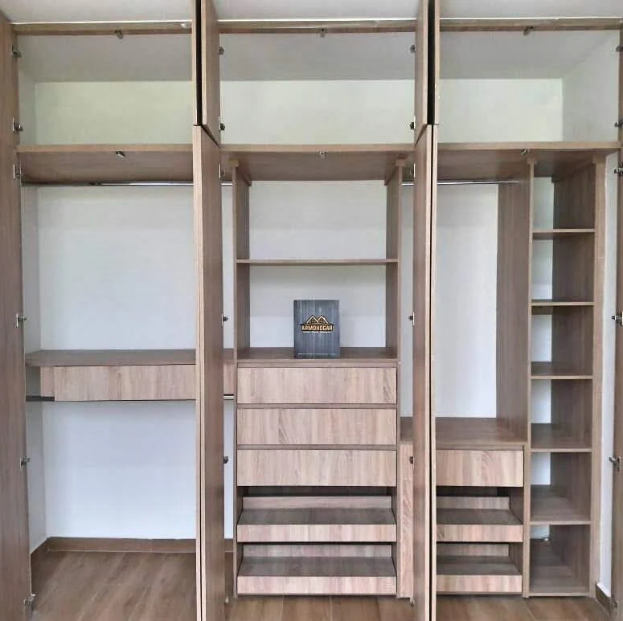
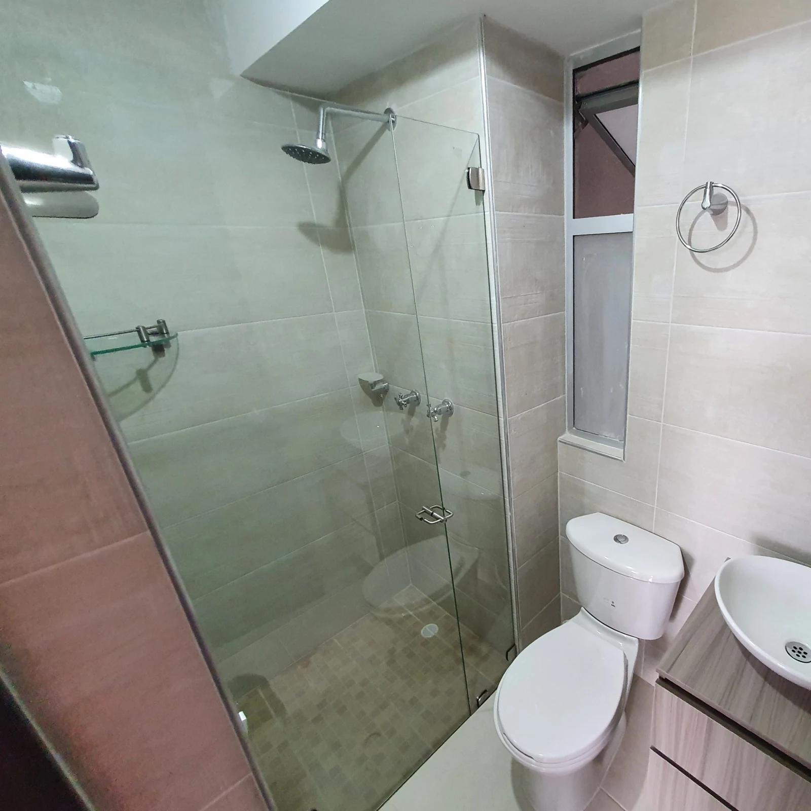
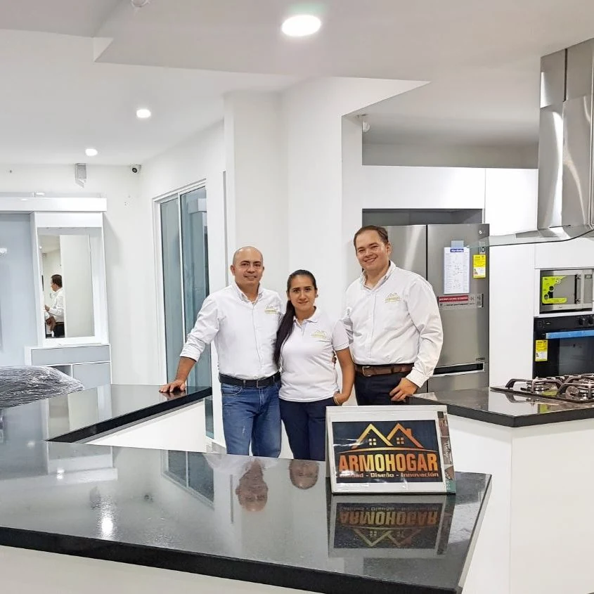

Escuchar y diseñar.
Conocer la necesidad, verificar las medidas y definir una propuesta con el alcance del proyecto.
Cocinas, closets y mobiliario a medida. Del espacio que tienes a la forma en que quieres usarlo.



Elige el ambiente que quieres transformar. Empezamos por entender qué necesitas, revisamos el espacio y preparamos una propuesta a tu medida.
Cuatro formas de darle un nuevo uso a tu espacio. Selecciona una para conocer qué conviene tener en cuenta.
Una distribución que conecte preparación, almacenamiento y los momentos que compartes en la cocina.
Imagen publicada en el sitio de Armohogar. Alcance y acabados sujetos a valoración.

Conocer la necesidad, verificar las medidas y definir una propuesta con el alcance del proyecto.
Acordar materiales, detalles y condiciones antes de dar paso a la fabricación de lo aprobado.
Coordinar el acceso al espacio, la instalación y la revisión final de tu mobiliario.
Fotografía del sitio oficial de Armohogar.
Prepara una solicitud en tres pasos. La cotización final requiere revisar medidas, materiales y condiciones del lugar.
Antes de compartir el mensaje por WhatsApp podrás revisarlo. La solicitud no confirma precio ni fecha de entrega.
Carrera 17 #52-69 · Bucaramanga
Bucaramanga, Floridablanca, Girón y Piedecuesta.
Confirma la cobertura de tu proyecto al consultar.
Una foto y medidas aproximadas ayudan a comenzar. La propuesta final requiere verificar las condiciones del espacio y acordar materiales y alcance con el equipo.
Cocinas, closets, muebles de baño, mobiliario de oficina y otras soluciones a medida que el equipo revisará contigo.
Se acuerda después de revisar el proyecto, materiales, disponibilidad y condiciones comerciales. El formulario no confirma fechas automáticamente.